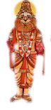

Narashima giant lion-man
In NARASIMHA Avatar, Lord Vishnu incarnates himself as a semi-man,semi-lion in this world. The king of demons(asuras), Hiranyakasyapu, wanted to become immortal and wanted to remain young forever. To this end, he meditated for Lord Brahma and because of his severe penance, the gods were frightened and asked Brahma to pacify the king. Brahma was impressed by his austerity and granted him a wish. Hiranyakasyapu wished that he be killed neither by a man or beast, nor in daylight or at night and neither inside or outside a building. Having obtained the wish he considered himself the supreme God and forbade all worship of gods by anyone. But his son Prahlada, was an ardent devotee of Vishnu. This enraged Hiranyakasyapu very much. He ordered numerous ways to kill Prahlada including asking his sister Holika to sit with Prahlada in the fire. But every time Prahlada escaped unhurt. Enraged, once he asked Prahlad to show him the Lord Vishnu. Prahlad said, "He is everywhere". Further enraged, Hiranyakasyapu knocked down a pillar, and asked if Lord was present there. Lord Vishnu then emerged as a half lion, half man from the pillar, and carried him under the arch of the doorway (neither indoors nor outdoors), and the time was evening (in the twilight), neither night nor day. He then killed Hiranyakasyapu with his claws by keeping him on his thighs (neither on earth nor in the sky) thus saving the life of his devotee Prahlada.